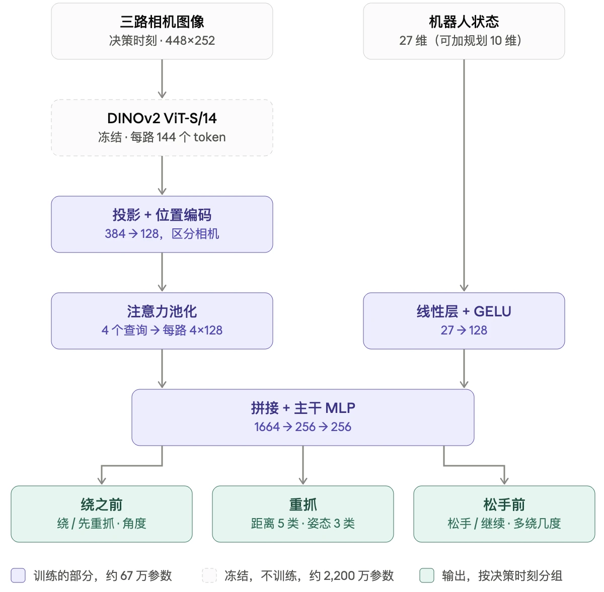
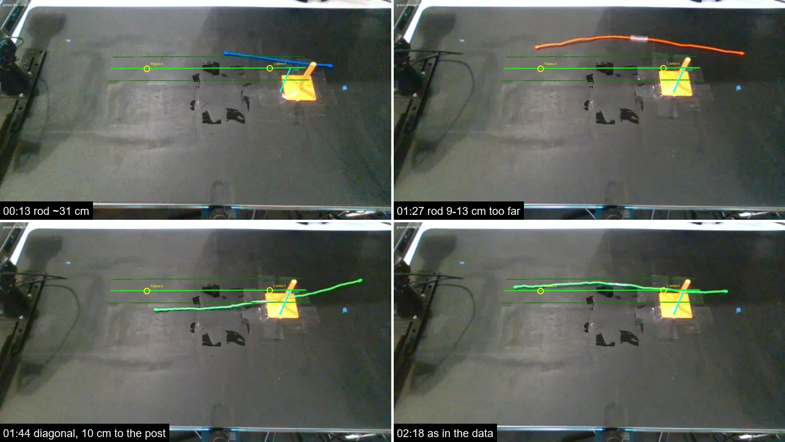
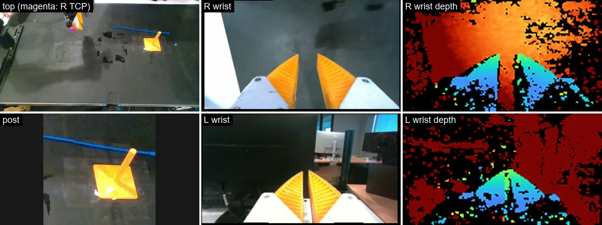
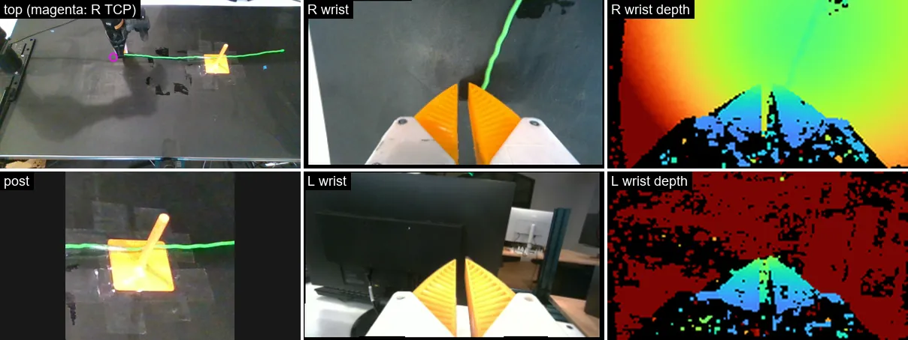
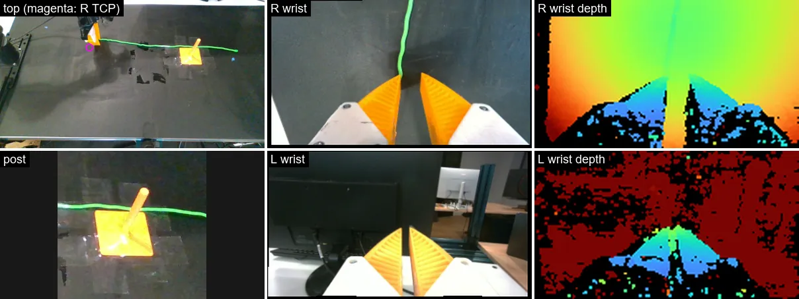
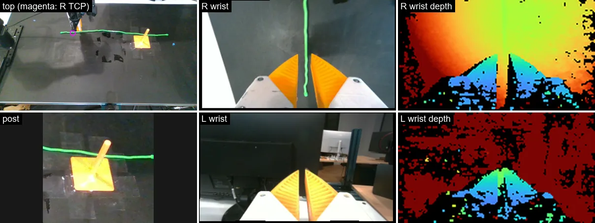
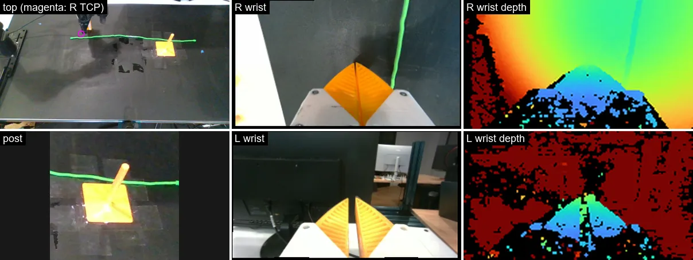
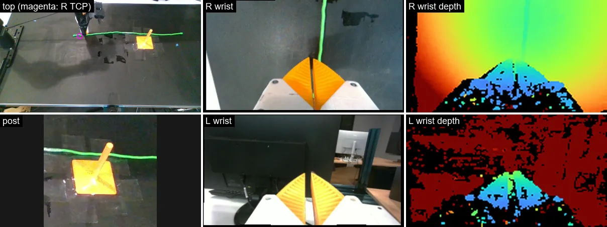
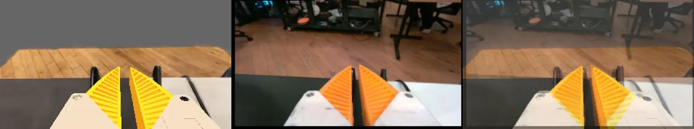

Rod Simulation and Cable Manipulation
Research demonstrations from my ongoing simulation and robotics project at UCLA.
Sim
Post Wrap
MPC
- bug：
- 对于随机长度，得开始考虑左手抓取的位置，接触点的位置
- 卡死的时候要加入重抓，找附近的位置，然后预测是否可以
- 夹爪和rod是刚性耦合，对于软的rod会穿模；改成真实推算的摩擦阈值
- 初始抓取问题：抓末尾分数最高，但是会影响后面重抓然后重抓范围不够大就会失败。固定规则：左手抓在“引入段长度 + 绕一圈所需长度 + 3 cm”处，杆不够长就抓末端
- 速度慢：把一个 world 的整套 PCG 放进一个 thread block，kernel 边界变成 block 内的同步
- mps。multi
- 双臂位置，左臂有些姿势达不到，比如远一点的地面的线，捡起来必须要竖直否则会碰，但是达不到这个角度，就会判断失败
Control：双臂？
- 先单臂，另外一个固定位置作为握持
- 右手完全不动、又要绕两圈
- 加入防止手腕卡死的重抓操作
- 重新加入cost：圈数，角度，距离等
- 进度：以高度，圈数，有多长贴在柱面上
- 加入关节，关节极限到mpc，作为cost，一同规划
杆自接触Hessian忽略非对角项收敛比较
41 个节点的杆摆成 α 形，末段从上方压过首段；夹爪在离交叉点 5.5 mm 处把上股下压 2 或 4 mm 后保持。误差是相对严格收敛参考解的最大位置偏差，耗时为单个 world、每 1/60 s 一帧（4 个子步，RTX 4060 Laptop）。三种 Hessian 的接触能量和梯度完全相同，只差矩阵里放了哪些块：full 保留两股之间的块，segment 只保留每段内部的块，diagonal 只保留每个粒子自己的 3×3 块。
- full（含交叉块）
- segment（丢跨股块）
- diagonal（只留对角）
Imitation Learning
脚本做法
绕柱任务需要的原语
grasp(arm, s)在线缆弧长 s 处抓取，脚本：感知给出中心线，直接计算抓取位姿
move(arm, position)
wrap_a_turn：
设置接触点，高度，圈数/角度，缠绕圈之间的高度差
wrap让rod弯曲一定角度，一只手固定，一只手弯
handover单臂绕不满一圈，需要双臂交接|脚本 + 优化交接时机和抓取点：未使用
tighten拉紧线圈脚本 + 力阈值，或者一个小 RL
release + verify松开并检查圈数脚本：用中心线计算绕柱角度
regrasp，如果判断到手将碰到障碍物（此处是柱子），重抓一定距离。
V0
数据生成：模拟器随机场景
- 柱子：5 种之一，直径 10–25 mm，位置随机（x ∈ [−0.15, 0] m、y ∈ [0.12, 0.17] m）；
- 杆：长 0.28–0.4 m，直径 4–5.5 mm（小于 4 mm 的跳过，手指夹不住），刚度和塑性随机；
- 引入段长度（右手起点到接触点）、杆接触柱子的侧面（接触点的位置，具体是它在柱子圆周上的方位角）、高度和螺距（绕一圈后杆往上升多少，保证不会压到自己本身）。
决策：wrap_a_turn 询问 env.decide(...)：每一笔之前、每次重抓、松手前
训练：
按照决策训练，写好的primitive，由NN来决策使用
使用成功回合里的决策，共 3,150 个：绕 1,984、重抓 184、松手 982。
特征生成
每一决策的对应时刻图像冻结的 DINOv2 ViT-S/14
- 得到 18×32 个 patch token，每个 384 维；
- 再按 2×2 求平均，变成 9×16 = 144 个 token
输入
- 3 × 144 × 384的图像特征
- 27维的机器臂位姿
- 关节和手指 16；两手握在杆的位置 2；是否握着 2；已绕wrap数、连续重抓次数 2；杆长、直径 2；决策时刻的 one-hot 3
- 规划信息：可以选择加入，脚本计算出来的，做判断的信息（需要percept），也可以不加，那就是纯图像信息输入，没有脚本辅助计算
- 已绕角度、想绕多少、能绕多少；预测剩几圈和“有没有预测”标志 2；停下原因 one-hot 5
网络结构

384 是 DINOv2 ViT-S/14 每个 token 的长度
注意力池化：
最简单的做法是把 144 个直接平均。但杆很细，只占少数几块，一平均就被稀释了。
注意力池化做的是加权平均，权重由内容决定
一个匹配由128维的向量q表示；q和token算给一个匹配分，144个做softmax，得到144个权重，表示和q的匹配度。
位置编码：
给每个 token 加上一个和它的位置对应的向量（3相机，144token，128位置向量）
学出来的
GeLU：ReLU的平滑版本
输出
stroke_action用绕之前的决策训练，0 = 绕，1 = 先重抓stroke_angle用决定“绕”的行训练，绕的角度 ÷ 360（sigmoid 输出）regrasp_distance用重抓行训练，往杆末端挪多远：−2 / 0 / +2 / +4 / +6 cm，5 类regrasp_rank用重抓行训练，选第几好的抓取姿态：0 / 1 / 2release_action松手前，0 = 松手，1 = 继续绕release_extra决定“继续绕”的行，再多绕多少度 ÷ 90（sigmoid 输出）
训练结果
位置编码
所有格子的编码彼此几乎一样：左右相邻格子的余弦相似度 0.99，隔 8 格也有 0.97。说明没有学出任何位置结构。
原因：网络靠机器人状态就能猜对大部分标签
成功率（Sim）
完全Sim真值：
纯脚本 94%
NN+部分脚本协助88% given the script’s planner numbers如要绕几圈
Sim模拟相机perception：
- 修改包括柱子也从perception中获得
修改
设计原语滑出判断 判断当前夹爪是否完全合拢（也就是没抓到 自动无阻碍合拢了）如果没有 执行重抓操作
问题：脚本会出现27/32: 找不到空位（桌面或另一条臂挡着），3 个是找不到无碰撞路径：重抓+-4cm，范围太大了
V1-纯感知版
方法
使用DERPerception，用相机做矫正
- 没有放深度图，矫正误差大
- 一开始把背后看不到的那些也算去矫正了
- 现在是保守策略，平均错误大才拉
结果
调整多轮
（模拟环境测试）真值30/32，纯感知24/32
V2-双臂相机
加入双臂相机
- 抓取成功直接看夹爪内有没有
- 抓前近距离看一眼加深度，找到位置
- 抓的过程中每0.2s看加深度，找dlo位置
- 在手检查改为相机直接判断tcp有没有dlo
Percept
- 抓取时：根据相机直接移动点，然后剩下的点自然回弹移动
V3-pi0.5
首先先直接拿已有数据做了一遍绕圈（已拿起），效果一般 69%，但是专家本身也才60%
问题
发现原因是柱子位置导致不一定成功
改为柱子在很小范围改变，适配各种rod，长杆的抓取规则调整。
因此需要重新训练pi
问题
发现前面不收敛，考虑仿真环境提高收敛迭代数
但是生成 π 数据可能不需要S10（十次newton收敛）
对模仿学习来说，1–2 cm 的轨迹差和一点松手后的抖动，可能就相当于一点物理随机化，影响不大。
先沿着杆去重抓，不行再松开后重抓
问题
0-3成功率很高，大于8到10以上成功率很低，不容易固定。于是忽略掉这部分，提高训练速度
4 个子任务 prompt：
“pick up the rod from the table with both hands”（抓起）
“carry the rod to the post”（搬运）
“wind the rod one full turn around the post”（绕圈，和旧数据的 prompt 相同）
“let go of the rod”（松手）
状态是 15 维，含线圈圈数
每个样本是“这一帧的三张图 + 机器人状态 + 一句 prompt → 接下来 1 秒该做的动作”
输入的状态是以文字形式输入的 受 200 个 token大小限制
混合训练：一个样本总prompt+子任务prompt都训
6000steps
问题
抓取的成功率很低 可能是因为rod的位置分布几乎不变 导致学成了固定位置范围抓取
改变rod分布 修改抓取脚本 重新训练
v2 模型
- 570 条示范
- 一个训练步随机抽 32 个样本，6000步约占全部帧的 24%，但是这个4000和6000差不多效果 因为分布都抽到了
| 阶段 | 6000 步 每 10 步重新预测（第三轮） | 6000 步 每 5 步重新预测 | 4000 步 每 10 步重新预测 |
|---|---|---|---|
| 回合数 | 32 | 16 | 16 |
| R 抓住 | 23（72%） | 11（69%） | 9（56%） |
| L 抓住 | 18（56%） | 11（69%） | 15（94%） |
| 双手抓住 | 11（34%） | 9（56%） | 8（50%） |
| 双手抬起 | 8（25%） | 7（44%） | 7（44%） |
| 线圈 ≥0.8 圈 | 3 | 1 | 2 |
| 最终成功 | 2（6%） | 1（6%） | 2（12%） |
| 抬起后成功 | 2/8 | 1/7 | 1/7 |
（专家成功率约 85%）
原因：大概率是因为专家的抓取不会失败，无法学到真正的判断，只是根据时间点路径依赖
DAgger
ongoing
V4-DP
Diffusion Policy（LeRobot 实现，按原版配方补齐），端到端：三个相机的图像 + 机器人状态 → 接下来 16 步每只手的关节角和夹爪宽度（dp7 起加了柱子相机，动作改成夹爪坐标系下的相对位姿）。从桌面拿起杆、搬到柱子、绕一圈、松手，整个任务一个策略。
数据生成
模拟器提速每帧 −25%，每条示范 −6%
数据 v5 一条成功示范平均 14.5 min（72 s 仿真；每台 pod 27 个进程共用一张卡）。
| 改动 | 原来 → 现在 | 效果 |
|---|---|---|
| 求解器换成 banded PCG 11-07 起生成的数据 | 每次 Newton 迭代的线性方程： → （生成数据时显式指定；数据 v3 的 11-05 那批还是 fused） | 同一场景每帧 149 → 111 ms；自由摆动 0.5 s 后离收敛解 75 mm → 0.008 mm |
| 等 GPU 时不空转 CPU 11-09 | 容器看到宿主机 288 核，CUDA 默认等 GPU 时原地空转，27 个进程把 27–31 核的 CPU 配额烧在空转上（load 40–66），挤占专家规划 → 改成阻塞等待（要在 warp 初始化之后设置，否则被覆盖）；ffmpeg 限 2 线程 | 本地：等待时单核占用 100% → 6%，墙钟不变；数据 pod 上的整机效果还没测 |
| 松手检查沿用预测 11-09 | 专家松手前先从快照模拟一遍松手，看能留下几圈；决定松手后再真的算一遍 → 决定松手就直接沿用预测那一段（只在脚本自己决策、没有感知估计时） | 每条成功示范平均 1.7 次检查、1 次松手，省约 6%；同一场景 10.9 → 9.9 min，结果相同（1.10 圈），子任务切分不变 |
没做的
- 空中重抓的预测也沿用：每条示范平均只有 0.45 次，约省 1.5%，但要改重抓的内部流程。
- 多个场景合进一个多 world 仿真：现在数据生成每个进程只有 1 个 world，27 个场景靠 27 个进程并行；合并要把专家脚本改成所有场景同步一帧一帧走，改动大，先看上面阻塞等待的整机效果再定。
真机之后的数据代码已改（_long 工作区，未提交），待生成
dp13 第一次上真机（见 真机）后对数据生成的修改：真机的摆放、杆的长短粗细、腕部相机的安装位置都和训练数据不一样，数据的分布要把这些盖住。原来的数据（数据 v3–v7、DAgger）不动，新数据另外生成。
| 改动 | 原来 → 现在 | 为什么 / 效果 |
|---|---|---|
| 长杆求解器 | 杆超过 125 个粒子时 的带放不进 shared memory，退回 fused / warp 的 PCG → 带放进动态 shared memory（双精度到约 258 个粒子，单精度到约 475 个），拉伸刚度不变；桌面摩擦锚点刚度 kf_table 1e5 → 1000（只改桌面和固定物体，道具和手指不变） | 精确解：0.9 m 杆每步 22 → 5.7 ms（原来离收敛解 21 mm），2 m 54 → 9.5 ms（原来差 101 mm）；2 m 的线在整个场景里每个子步 Newton 12 → 6 次，DER 80 → 34 ms。顺带修了 125 个粒子的杆编译失败（main 上也有） |
| 长度 | 0.48–0.65 m → 0.4–0.6 m 50%、0.6–0.8 m 8%、0.8–1.0 m 25%、1.0–1.8 m 5%、1.8–2.2 m 12% | 办公室里常见的杆和线：0.4–0.6 m 最多，0.9 m 次之，2 m 最少；2 m 的线只需要两只手抓的那段在原位置附近，其余可以弯着或垂下桌面 |
| 直径 | 4–6 mm → 4–6 mm 70%、6–12 mm 15%、13–16 mm 15%；长于 1.2 m 的线 4–7 mm | 指尖夹不住 4 mm 以下的杆；粗杆材料不明，弯曲刚度按 EI 0.002–0.05 N·m² 随机；粗杆的粒子间距至少 0.67 倍直径 |
| 初始形状 | 直杆 → 塑料杆的弯曲静止形状和拱起，先在桌上落定（这段不录）；两只手要抓的那段仍是直的，其余避开桌边、底座、柱子和桌上的物体 | 真机上的杆和线都不是直的 |
| 摆放 | 杆沿 x，前后 ±4.5 cm、角度 ±15°，柱子 ±1 cm → 围绕原位置的截断正态（σ 3 cm / 10° / 两手间距 2 cm，截在 2σ），每只手抓在竖直夹爪够得到的地方（离底座 0.22–0.395 m）；柱子 ±3 cm | 真机上摆放稍偏，R 就到数据里杆该在的地方去找；仍以原位置为主，只为吸收摆放误差 |
| 杆头附近抓取 | 新增：约 20% 的 episode，L 抓在离杆头 3–7 cm 处 | 较短的杆两只手只能抓到杆头附近 |
| 桌面摩擦 | μ = 0.6 → 0.6 附近小幅随机（截断正态 σ 0.05，0.5–0.7） | 杆的橡胶外皮在黑色垫子上，范围不宜大 |
| 抓取 | 桌面抓取夹爪张 30 mm、空中张到杆径 + 10 mm → 尽量张大：依次试 70 / 55 / 40 mm，张开的手指会碰到东西才缩小；整体放慢、中间不停：2 s 移到上方，1.5 s 慢慢下降，合爪后停 0.3 s，手指 50 mm/s（真夹爪的速度） | 真机上 R 合得太早、太高或偏到杆旁边；策略要在慢慢下去的过程中看清、对准 |
| 边下降边纠正 | 原来桌面上的扰动是手偏了、合空后退回重来，空中的扰动到位之后才慢慢纠正 → 桌面和空中各一半的抓取里，手先偏离杆 6–15 mm（70% 横跨手指方向、左右随机，30% 沿工具轴停在杆上方），偏差在 1.5 s 的下降过程中逐渐消失，到底时正好对准；专家的指令本身不带偏差 | 数据里有手偏了、一边慢慢下降一边自己对准的样子，对应真机上 R 偏到杆旁或停在杆上方的情况 |
| 成功判定 | 松手后柱子上留一圈 → 握着成一圈就算成功（wrap_a_turn 以“握住”结束，不松手）；评测端 sim_eval --success hold 一致 | 先把绕的动作做对，松手留圈另说 |
| 相机随机化 | dp13：顶部相机 ±5 mm / 0.5°、腕部 ±2 mm / 1.5°（随机轴），深度仍按原位姿渲染 → wide 档：顶部和腕部相机俯仰 ±5.5°、偏航和滚转 ±2°、位置每轴 ±1.2 cm，焦距 ±3%；腕部深度和 RGB 用同一套位姿 | 实测真机 R 腕部相机比仿真多俯仰约 4.5°、位置差约 1 cm（见 真机），范围比实测误差大一些 |
下一步
- 生成新数据，在 dp13 / dp15 中更好的那个基础上用旧数据 + 新数据微调（不从头训练）。
- 原型的仿真速度（笔记本）：0.55 m 杆 111 个粒子每 1 s 仿真 7.7 s，0.9 m 181 个 12 s，2 m 401 个 32 s。
Train
dp10/32 抓住
| 数据 | v3：1079 条成功示范，153 万帧，20 Hz。专家到位立即合手，仿真夹爪 1 帧合上；30% 的桌面抓取故意偏 6–15 mm（悬停后抬起重来）；DART 执行噪声 0.3°（一半回合） |
|---|---|
| 数据生成时间 | 三批合成：11-05 两台 pod 约 8.3 h（575 条）；11-07 三台 RTX PRO 6000 2 h 39 min（07:30–10:09 UTC，477 条），另有之前中途停掉的一批 27 条；转成 LeRobot 格式 1 h 04 min |
| 输入（观测） | 1 帧：顶部相机 640×360 整图 + 两个腕部相机 640×360；状态 41 维 = 关节和夹爪 14 + 缠绕圈数 1 + 杆关键点 26（8 点 × 3 + 柱子 xy，仿真真值） |
| 输出（动作） | 16 步 × 14 维（每只手 6 个关节的绝对角度 + 夹爪宽度），每次执行前 8 步 |
| 模型与训练 | 每个相机一个 ResNet18（GroupNorm，从零训），不裁图；DDIM 10 步；AMP；batch 64，lr 1e-4 余弦；没有 EMA，没有图像增强 |
| 训练量 | 4 万步（1.67 epoch），loss 0.004 |
| 训练时间 | 2 h 43 min（11-07 13:08–15:51 UTC），0.24 s/步，1 台 RTX PRO 6000 |
| 评测 | 种子 600000–600015，各 2 次；评测时两只夹爪都强制张开 30 mm；32 回合约 2 h（15:53–17:52 UTC） |
| 结果 | 32 回合 0 次抓住；手在杆上方 15–40 cm 游走 |
| 结论 | 离线逐帧误差小（0.5–0.7°），闭环失败。当时怀疑缺少时间信息 → dp2 |
dp2R 1、L 1 / 16
| 修改 | 观测改为 2 帧（DP 标准），其余同 dp1 |
|---|---|
| 数据生成时间 | 不重新生成，数据同 dp1；重新转成 LeRobot 格式 46 min |
| 输入（观测） | 2 帧：三个相机 640×360 + 状态 41 维（同 dp1） |
| 输出（动作） | 16 步 × 14 维，执行 8 步 |
| 训练量 | 4 万步（1.67 epoch），loss 0.004 |
| 训练时间 | 5 h 15 min（11-07 23:01 – 11-08 04:16 UTC），0.47 s/步（2 帧图像，编码器的计算量翻倍） |
| 评测 | ① 强制张开：29 回合 0 次抓住。② 修正后（不强制张开，杆在两指尖之间就算抓住）：16 个场景 |
| 结果 | 修正后 R 抓住 1、L 抓住 1，双手 0。R 会在约 3 s 下去抓（时机对），但合手时手离杆 5–21 mm |
| 结论 | 强制张开在数据里等于“R 已经抓住、该 L 了”，模型去动 L；修正后的问题是合手偏早、偏高。抓空后的状态数据里从未出现（专家对不准时在合手前就退开，“合空后重抓”0 次），于是乱动。另有 5/16 个评测种子和训练数据重合 |
dp4 · 第一轮双手 13/16，成功 1/16
| 数据 | v4：1081 条成功示范，79.5 万帧，10 Hz（图像也按 10 Hz 渲染） |
|---|---|
| 数据生成时间 | 5 h 17 min（11-08 11:07–16:24 UTC），3 台 RTX PRO 6000 并行，每台 27 个进程；共跑 2035 个场景：成功 1081、跳过 688（布局抓不到）、失败 266；转成 LeRobot 格式 23 min |
| 专家 / 仿真修改 | 到位后停 0.3 s 再合；手指按 50 mm/s 合拢（30 mm 约 0.6 s），手指碰到杆才算抓住；去掉桌面抓取的故意偏移；保留 DART 执行噪声 0.3° |
| 输入（观测） | 2 帧：顶部相机 640×360 整图 + 两个腕部相机 320×180；状态 32 维 = 关节和夹爪 14 + 两手末端位置与 6D 姿态 18（去掉仿真真值） |
| 输出（动作） | 16 步 × 14 维（绝对关节角 + 夹爪宽度），执行 8 步 |
| 模型与训练 | 按原版 DP 配方补齐：EMA（power 0.75，上限 0.9999）、随机平移 ±16 px（不裁图）、每个相机独立的 ResNet18（允许不同尺寸）、DDIM 100 / 100 步；AMP；batch 64，lr 1e-4 余弦（预热 500） |
| 训练量 | 8 万步（6.4 epoch），loss 0.004 |
| 训练时间 | 6 h 04 min（11-08 16:52–22:55 UTC），0.25 s/步 |
| 评测 | 种子 800000–800015（训练没用过）；夹爪限速合拢，指尖从内侧碰到杆且沿工具轴 ≤ 5 mm 才算抓住；每个场景 150 s；16 个场景并行，每个检查点约 40 min |
| 结果 | 4 万步：R 5、L 7、双手 1、抬起 1、成功 1。8 万步：R 14、L 13、双手 13、抬起 11、到柱子 14、最多绕到 ≥0.5 圈 2、成功 1（0.95 圈） |
| 问题 | 桌面抓取 27/28，空中抓取（R 在锚点重抓、L 换手）只有 3/17；抓在指尖附近（+1.2 mm）容易滑脱。4 万 → 8 万步提升很大 |
dp5 · 第二轮双手 14/16，成功 2/16
| 数据 | v5：1169 条成功示范，91.8 万帧，10 Hz |
|---|---|
| 数据生成时间 | 3 h 31 min（11-09 00:30–04:01 UTC），6 台 RTX PRO 6000（3 台先开，另 3 台晚 14–22 min 加入），合计满 1000 条时统一停、跑完手上的场景；共跑 2346 个场景：成功 1169、跳过 804、失败 373；转成 LeRobot 格式 19 min |
| 专家 / 仿真修改 | 在 v4 上：空中抓取在有空间时往深处多抓 4 mm；空中接近的 DART——一半的空中抓取先被推偏 6–15 mm，偏移在对准过程中 0.6 s 内消失，专家指令始终指向杆 |
| 输入（观测） | 2 帧：三个相机（同 dp4）；状态 35 维 = 关节和夹爪 14 + 两手末端位置与 6D 姿态 18 + 杆的材料参数 3（直径、log10 弹性模量、回弹曲率 κs），训练时加噪声（0.1 mm / 0.1 / 0.5 m−1），模拟真机系统辨识的误差 |
| 输出（动作） | 同 dp4：16 步 × 14 维（绝对关节角 + 夹爪宽度），执行 8 步 |
| 模型与训练 | 同 dp4 |
| 训练量 | 12 万步（8.4 epoch），loss 0.004 |
| 训练时间 | 8 h 37 min（11-09 04:22–12:59 UTC），0.26 s/步 |
| 评测 | 同 dp4，另加：杆碰到柱子并在手里绕到 ≥ 0.25 圈后，两手放开 3 s 才算结束（旧规则偶然滑脱一下就提前结束）；手指卡在杆上停住时也判定抓住或抓空；每个检查点约 44 min |
| 结果 | 6 万步（旧规则、100 s）：R 10、L 6、双手 3、成功 0。8 万步：R 13、L 13、双手 10、抬起 7、≥0.5 圈 4、成功 2。12 万步：R 15、L 15、双手 14、抬起 11、到柱子 14、≥0.5 圈 7、成功 2（1.17 圈、0.95 圈） |
| 问题 | 空中抓住时位置更深（−0.8 mm，“抓深”学到了），但空中抓取仍只有 6/30；松手偏早（最多绕到 0.54–0.70 圈就放，只剩 0.12–0.27 圈）；滑脱 13 次 |
dp5ft · 继续训练双手 14/16，成功 2/16
| 修改 | 从 dp5 的 12 万步权重（EMA）继续训练 4 万步，lr 3e-5（预热 1000，余弦）；数据和配方同 dp5 |
|---|---|
| 数据生成时间 | 不重新生成，数据同 dp5 |
| 训练量 | 4 万步（共 16 万步），loss 0.004 |
| 训练时间 | 前 2 万步 2 h 27 min（11-09 18:53–21:20 UTC，0.45 s/步，这台 pod 读数据慢）；之后提速（数据加载改为 numpy 列 + uint8 帧，torch.compile、channels-last、bf16、fused Adam），从 2 万步的检查点接着训，后 2 万步 53 min（21:25–22:18 UTC，约 0.15 s/步） |
| 评测 | 同 dp5（种子 800000–800015，新结束规则，150 s）；新 pod 上 16 个仿真同时编译内核时内存映射失败，改为先开 1 个把内核编译进缓存，再开其余 15 个；约 43 min |
| 结果 | 成功 2（800005 1.06 圈、800001 0.90 圈）；R 16、L 14、双手 14、抬起 11、到柱子 15、≥0.5 圈 8；桌面抓取 30/32，空中抓取 4/27（R 在锚点重抓 4/15）；滑脱 6 次（dp5 12 万步 13 次） |
| 问题 | 成功数没变（成功的场景换了：dp5 是 800000、800012）。放手后圈数基本保住（8 个放手的回合，最后圈数 ≈ 最多圈数），但其中 6 个绕到 0.5–0.85 圈就放了，没绕满一圈；另外 8 个超时、几乎没绕，卡在空中重抓或没抬起来。桌面抓取和滑脱变好，空中抓取仍是瓶颈 |
dp7 · 相对位姿双手 10/16，成功 4/16
| 修改 | 动作改成夹爪坐标系下的相对位姿（UMI 的做法），观测不变；加一个对准柱子的大图；加辅助任务：从顶部和柱子相机的特征预测已绕的圈数；重抓片段（夹爪放开后、再次合上前 20 步到合上后 5 步）采样加到 5 倍 |
|---|---|
| 数据 | v7：示范同 v5（1169 条，91.8 万帧，10 Hz），每条补渲染柱子相机；动作换成关节指令的正运动学（和记录的 TCP 相差 ≤ 0.0006 mm）；每帧附上圈数作为辅助任务的标签 |
| 数据生成时间 | 不重新仿真：补渲染柱子相机 + 算动作 27 min（11-10 02:45–03:12 UTC，先 1 台，再拆到 3 台 RTX PRO 6000）；转成 LeRobot 格式 29 min（10 份并行再合并） |
| 输入（观测） | 2 帧：顶部相机 640×360 整图 + 两个腕部相机 320×180 + 柱子相机 256×256（D415 转向柱子底部上方 6 cm，焦距 2 倍）；状态 35 维（同 dp5） |
| 输出（动作） | 16 步 × 20 维：每只手 TCP 位置 3 + 6D 姿态 6 + 夹爪宽度 1，位置和姿态相对观测时这只手的位姿；执行时换回绝对位姿，经 IK 走 |
| 模型与训练 | 同 dp5，另加圈数辅助头（顶部 + 柱子相机的特征 → 圈数，均方误差权重 0.1，策略本身不用它的输出）；batch 64，lr 1e-4 余弦（预热 500） |
| 训练量 | 10 万步（7.0 epoch），loss 0.003；圈数辅助 mse 0.0007–0.0009（约 0.03 圈） |
| 训练时间 | 3 h 08 min（11-10 05:05–08:12 UTC），0.11 s/步，1 张 B200；之前在 2 × RTX PRO 6000 上试多卡并行，第一次 NCCL 通信就崩溃（虚拟化下 PCIe P2P 不通），放弃 |
| 评测 | 种子 800000–800015，150 s，结束规则同 dp5；求解器用和数据一致的 banded PCG；每次执行 4 步（之前 8 步）；不录视频；约 54 min（1 台 RTX PRO 6000） |
| 结果 | 成功 4（800001 0.98 圈、800002 1.06、800006 1.00、800012 1.28）；R 12、L 12、双手 10、抬起 10、到柱子 13、≥0.5 圈 9；桌面抓取 25/42，空中抓取 12/32（R 在锚点重抓 8/11）；滑脱 2 次 |
| 问题 | 空中抓取明显变好（dp5ft 4/27），但桌面抓取退步（dp5ft 30/32）：6 个场景 R 离杆还有 15–24 mm 就合手（横向偏 1–2 cm），2 个场景 L 张开得比杆还窄就去合。另测了感知辅助（RodBelief 接管合手前的最后几厘米）：只有 3/16，策略把 R 放到抓不了的位置，辅助反复重试（一个场景 359 次） |
dp7ft · 继续训练成功 18/50（50 场景）
| 修改 | 从 dp7 的 10 万步权重（EMA）继续训练 6 万步，lr 3e-5（预热 1000，余弦），换了随机种子；数据和配方同 dp7 |
|---|---|
| 数据生成时间 | 不重新生成，数据同 dp7 |
| 训练量 | 6 万步（共 16 万步），loss 一直在 0.003–0.004；圈数辅助 mse 0.0014 → 0.0002–0.0006 |
| 训练时间 | 2 h 03 min（11-10 19:57–22:00 UTC），0.12–0.13 s/步，1 张 H200（CPU 配额 20 核，数据加载 18 个进程） |
| 评测 | 同 dp7（banded PCG，每次执行 4 步，不录视频）；训练完在同一台 H200 上评测，约 59 min（先单独开 1 个编译内核 5 min，再 16 个并行） |
| 结果 | 50 个场景（见 Eval 的 50 场景对比，和 dp8、dp8ft、dp9 同一组种子）：成功 18/50 = 36%；按每次重抓（第一次合手就抓住 / 最终抓住）：桌面 88/93%，R 空中 80/80%，L 空中 22/34%。16 个场景：成功 7（800001、800002、800006、800007、800010、800011、800014）；R 15、L 16、双手 15、抬起 15、到柱子 16、≥0.5 圈 15；桌面抓取 31/34，空中抓取 27/53（R 16/18，其中锚点重抓 13/15；L 11/35）；滑脱 5 次 |
| 问题 | 比 dp7 新增成功 4 个、少了 1 个（800012），桌面抓取的退步也没了；训练 loss 看不出变化，提升只在闭环里显出来。剩下 9 个失败里 6 个卡在 L 的空中重抓：24 次抓空里 21 次合手时杆离 TCP 还有 1 cm 以上（中位数 19 mm），手没到杆的位置。下一步（dp8）：加辅助任务，从腕部相机的特征预测杆在夹爪坐标系下的位置 |
dp8 · 杆位置辅助成功 22/50（50 场景）
| 修改 | 从 dp7ft 的 16 万步权重（EMA）继续训练 6 万步，lr 3e-5（预热 1000，余弦）；加辅助任务：每个腕部相机一个小头，从这个相机的特征预测杆在这只手的夹爪坐标系下的位置（离 TCP 最近的杆上一点，超过 5 cm 的截到 5 cm），均方误差权重 0.1，策略本身不用它的输出；新头前 2000 步单独学（不回传到编码器），之后编码器一起训 |
|---|---|
| 数据生成时间 | 不重新生成；标签从记录的轨迹直接算（每帧的杆和两手位姿），91.8 万帧 2 min。L 的杆中位数离 TCP 0.8 mm、81% 的帧在 5 mm 以内（大部分时间握着杆），R 1.7 mm、74% |
| 训练量 | 6 万步（共 22 万步），loss 0.003；杆位置误差（均方根）20 mm → 只训头时 10–14 mm → 编码器一起训后 3–5 mm（杆离手 2 cm 以内时 2–3 mm） |
| 训练时间 | 2 h 14 min（11-10 23:40 – 11-11 01:54 UTC），0.11–0.13 s/步，1 张 H100（32 vCPU）；先开的 H200 只有 16 vCPU（CPU 配额 13.6 核），数据加载跟不上（0.2 s/步），训了几百步就换机重来 |
| 评测 | 同 dp7ft（每次执行 4 步，不录视频）；求解器换成大 kernel + banded 分 4 段（见下面的 Eval 提速，物理和原来一致到舍入误差）；训练完在同一台 H100 上评测，约 59 min |
| 结果 | 50 个场景：成功 22/50 = 44%（和 dp7ft 配对检验 p = 0.56，分不出高低）；按每次重抓：桌面 88/92%，R 空中 88/90%，L 空中 40/51%。16 个场景：成功 4（800002、800004、800008、800014）；R 14、L 15、双手 14、抬起 14、到柱子 14、≥0.5 圈 11；桌面抓取 29/35，空中抓取 18/38（R 12/16，其中锚点重抓 11/14；L 6/22）；滑脱 6 次 |
| 问题 | 16 个场景比 dp7ft 少 3 个，50 个场景反而多 4 个：16 个场景分不出两者。只训头时误差降不下去，说明 dp7ft 的腕部相机特征里本来没有精确的杆位置；一起训后误差降到 3–5 mm（大部分帧是握着杆的，手接近杆的那段精度没单独测）。L 空中重抓仍是瓶颈。合手时刻分析（dp7ft、dp8 的评测轨迹）：合手那一刻手只落后策略给的目标 2–3 mm，是目标本身离杆 15–19 mm，之后 0.6 s 也没修正，偏差主要沿接近方向（±11 mm，两个方向都有）、侧向约 8 mm——不是指令时机的问题，是瞄准偏了。另有 4 个场景绕到 0.9–1.07 圈却没在 150 s 内松手（超时） |
dp9 · 相对观测成功 7/50（50 场景）
| 修改 | 观测改成 UMI 的相对观测：状态去掉绝对关节角和绝对 TCP 位姿（想让策略只能从图像判断手在哪，不能凭“手在这儿，杆一般就在那儿”去瞄），改为每帧的两手夹爪宽度、每只手上一帧相对当前帧的位姿（运动）、左手在右手坐标系下的位姿（双臂之间的几何）、杆的材料参数，共 32 维；去掉随机平移增强（腕部相机固定在手上，平移 16 像素约等于 ±5° 的方向误差，3–10 cm 处 3–9 mm；仿真里相机位姿是精确的）；保留 dp8 的两个辅助任务和重抓 5 倍采样；从头训，配置同 dp7（直接读 dp7 的训练配置） |
|---|---|
| 数据生成时间 | 不重新生成，数据同 dp7；评测时策略服务把仿真发来的 35 维绝对状态换成 32 维相对状态，评测端不用改 |
| 训练量 | 10 万步（7.0 epoch），loss 0.003 |
| 训练时间 | 4 h 43 min（11-11 07:14–11:57 UTC），0.13–0.17 s/步，1 张 H100 |
| 评测 | 50 个场景（同一组种子），大 kernel + banded 分 4 段，批处理策略服务，20 个场景同时跑；87 min |
| 结果 | 成功 7/50 = 14%（dp8 22/50，配对检验 p = 0.001，显著更差）；R 38、L 43、双手 36、抬起 34、到柱子 44、≥0.5 圈 18；按每次重抓：桌面 78/87%，R 空中 67/78%，L 空中 33/56% |
| 问题 | 桌面抓取、R 重抓和绕圈都退步，L 空中重抓也没变好。但它只训了 10 万步（dp8 是 22 万步），又同时改了两样，分不清原因；正在按 dp8 的节奏续训到 22 万步（dp9ft：+6 万步，dp9ft2：再 +6 万步，lr 3e-5）再比 |
dp8ft · 继续训练（对照）成功 23/50（50 场景）
| 修改 | 从 dp8 的 22 万步权重（EMA）继续训练 8 万步，lr 1e-4（预热 1000，余弦），其余同 dp8；是 dp10 的对照组（两者只差动作的归一化），也回答“多训有没有用” |
|---|---|
| 数据生成时间 | 不重新生成，数据同 dp7 |
| 训练量 | 8 万步（共 30 万步），loss 0.003 |
| 训练时间 | 2 h 59 min（11-11 13:35–16:34 UTC），0.11–0.13 s/步，1 张 H100 |
| 评测 | 50 个场景（同一组种子），同 dp9；72 min |
| 结果 | 成功 23/50 = 46%（dp8 22/50，配对检验 p = 1.0）；R 49、L 48、双手 46、抬起 46、到柱子 48、≥0.5 圈 41；按每次重抓：桌面 96/97%，R 空中 89/94%，L 空中 28/47% |
| 问题 | 22 万步之后再多训，成功率没有提高：桌面抓取更稳了（重复合手少了），L 空中重抓没有改善 |
dp10 · 逐步归一化成功 25/50（50 场景）
| 修改 | 和 dp8ft 完全一样（同一个起点、步数、学习率、随机种子），只改动作的归一化：原来 16 步统一按全局范围归一化（各轴 0.6–0.95 m，1 cm 只占约 2%，扩散模型 1–2% 的输出误差就是 0.5–1.5 cm）→ 每一步用自己的范围（相对动作在数据集里的 0.1%–99.9% 分位数，超出的截掉；推理时扩散策略本来也把输出截到这个范围）。实际执行的第 1 步 L 的范围 x 16 cm、y 26 cm、z 14 cm，第 4 步 31 / 45 / 26 cm，分辨率高 3–6 倍。最小 / 最大值试过：第 1 步被少数“手远远落后指令”的样本撑到半米，没用。从 dp8 接着训时，检查点里旧的动作归一化参数在加载后设回恒等 |
|---|---|
| 数据生成时间 | 不重新生成，数据同 dp7；每一步的范围从数据集算（约 1 min），和权重一起存进检查点，策略服务读取后把动作换算回去 |
| 训练量 | 8 万步（共 30 万步），loss 0.004（归一化不同，和其他模型的 loss 不能直接比） |
| 训练时间 | 0–2 万步 41 min（11-11 13:32–14:14 UTC）；第一次训到 4 万步时 pod 的 100 GB 磁盘满了（还存着 dp9 的检查点），存盘失败，清理后从 2 万步的检查点续训，2–8 万步 2 h 10 min（16:03–18:13 UTC），0.11–0.14 s/步，1 张 H100 |
| 评测 | 50 个场景（同一组种子），同 dp9；73 min |
| 结果 | 成功 25/50 = 50%（对照组 dp8ft 23/50，配对检验 p = 0.82）；R 50、L 46、双手 46、抬起 45、到柱子 48、≥0.5 圈 40、绕到 ≥0.9 圈 30（dp8ft 27）；按每次重抓：桌面 94/97%，R 空中 84/84%，L 空中 34/66%（dp8ft 28/47%）；按每次合手，L 空中 32% 对 dp8ft 18%（按种子重抽样，98% 的情况 dp10 更好） |
| 问题 | 目前成功率最高，但比对照组的提升不显著。L 空中重抓有改善的迹象（最终抓住 66% 对 47%），R 空中略差（84% 对 94%） |
dp9ft2 · 续训到 22 万步成功 22/50（50 场景）
| 修改 | 从 dp9 的 10 万步权重按 dp8 的节奏续训两次：dp9ft +6 万步，dp9ft2 再 +6 万步，lr 3e-5（预热 1000，余弦）；其余同 dp9（相对观测、不做随机平移），共 22 万步，和 dp8 相同 |
|---|---|
| 数据生成时间 | 不重新生成，数据同 dp7 |
| 训练量 | 12 万步（共 22 万步），loss 0.002–0.003 |
| 训练时间 | dp9ft 2 h 43 min（11-11 18:52–21:35 UTC）+ dp9ft2 2 h 41 min（21:38–00:19 UTC），0.17 s/步，1 张 H100 |
| 评测 | 50 个场景（同一组种子），同 dp9（旧合手判定）；77 min |
| 结果 | 成功 22/50 = 44%（dp8 22/50，配对检验 p = 1.0）；双手 45、到柱子 47、≥0.5 圈 33；按每次重抓：桌面 90/92%，R 空中 78/91%，L 空中 35/52% |
| 问题 | dp9 的 7/50 是因为步数不够；训到和 dp8 一样的步数后成功率相同：相对观测既没帮助，也没坏处。失败的结构也一样：有 L 空中重抓的回合只成功 4/24，没有的 17/20 |
dp11 · 腕部深度成功 26/50（50 场景）
| 修改 | 两个腕部相机加深度：渲染器的深度（每个像素的射线到表面的距离）每 2×2 取最近的有效值，降到 160×90，1 mm 一级（60–314 mm，0 = 没有深度），作为腕部编码器第一层卷积的第 4 个通道（新通道的权重从 0 开始）；训练时加 1.5 mm 噪声和 2% 空洞，和 RGB 做同样的随机平移。从 dp10 继续训 4 万步，lr 1e-4（预热 1000，余弦），其余同 dp10 |
|---|---|
| 数据生成时间 | 不重新仿真：按记录的轨迹重新渲染两个腕部相机的深度，1169 条，2 张 RTX PRO 6000 14 min（11-11 22:19–22:33 UTC） |
| 训练量 | 4 万步（共 34 万步），loss 0.004 |
| 训练时间 | 1 h 21 min（11-11 22:58 – 11-12 00:19 UTC），0.12 s/步，1 张 H200 |
| 评测 | 50 个场景，新的合手判定（杆可以比 TCP 深 30 mm，见 Eval），仿真把腕部深度也发给策略；65 min |
| 结果 | 成功 26/50 = 52%（同一判定下的 dp10 23/50，配对检验 p = 0.66）；双手 47、到柱子 47、≥0.5 圈 35；按每次重抓：桌面 97/97%，R 空中 85/90%，L 空中 46/63% |
| 问题 | 深度用上了（第一层卷积里深度通道的权重约是一个 RGB 通道的一半），桌面抓取更稳（桌面失手的回合 8 → 3），但 L 空中重抓没有变好；L 空中合空时，杆位置辅助头仍说杆离 TCP 2.3 mm（实际 13.9 mm） |
dp12 · 颜色随机成功 33/50，不算黑杆 19/27
| 修改 | 每条示范按种子随机杆和柱子的颜色（杆：黑 55%，白、绿、红各 15%，带亮度和色偏的抖动；柱子连底板白、橙各一半；桌面和其他不变），按轨迹把 4 个相机全部重新渲染；评测时每个场景也按种子取颜色。从 dp11 继续训 4 万步，配置同 dp11 |
|---|---|
| 数据生成时间 | 不重新仿真：按记录的轨迹重新渲染 1169 条 × 4 个相机，3 张 RTX PRO 6000 37 min（11-11 23:17–23:54 UTC） |
| 训练量 | 4 万步（共 38 万步），loss 0.004 |
| 训练时间 | 1 h 21 min（11-12 00:25–01:46 UTC），0.12 s/步，1 张 H200 |
| 评测 | 50 个场景，新合手判定 + 腕部深度 + 随机颜色；62 min |
| 结果 | 成功 33/50 = 66%（dp11 26/50，配对检验 p = 0.23）；双手 48、到柱子 49、≥0.5 圈 43，超时 23 → 9；按每次重抓：桌面 96/97%，R 空中 94/94%，L 空中 64/81%。按颜色：黑杆 14/23、绿 6/11、红 7/8、白 6/8；不算黑杆 19/27 = 70% |
| 问题 | 提升主要来自 L “停在杆前面、没够到”的合空大幅减少（20 → 8 次）：颜色随机让策略没法凭外观走捷径。剩下的 L 合空多是离杆很远（跟丢了）。黑杆最差（对比度低，14/23 = 61%），而训练和评测里黑杆都占 55%（按当时“实际以黑色为主”设的）；实际不用黑杆，更该看不算黑杆的 19/27 = 70% |
dp13 · 点云 + 细微随机成功 34/50，不算黑杆 21/27（目前最好）
| 修改 | 三项一起加：① 腕部深度转成点云（3D Diffusion Policy 的做法）：每个腕部相机取 TCP 前方 15 mm 处 ±60 mm 框内的 512 个点，一个 PointNet（3 → 64 → 128 → 256，取最大值，→ 64 维），特征接在 U-Net 条件的末尾（新加的权重从 0 开始）；② 第二次颜色抽样，加每条示范的相机位姿抖动（腕部 ±2 mm / ±1.5°，顶部 ±5 mm / ±0.5°，焦距 ±3%），重新渲染；③ 训练时在线图像增强（亮度、对比度 ±10%，R/B 增益 ±5%，饱和度 ±10%，噪声，偶尔模糊和小块遮挡）。从 dp12 继续训 4 万步 |
|---|---|
| 数据生成时间 | 不重新仿真：按轨迹重新渲染 1169 条 × 4 个相机，3 张 RTX PRO 6000 18–37 min（11-12 05:23–06:00 UTC） |
| 训练量 | 4 万步（共 42 万步），loss 0.004 |
| 训练时间 | 1 h 34 min（11-12 06:40–08:14 UTC），0.13–0.15 s/步，1 张 H200 |
| 评测 | 同 dp12；64 min |
| 结果 | 成功 34/50 = 68%（dp12 33/50，配对检验 p = 1.0）；双手 44、到柱子 49、≥0.5 圈 41；按每次重抓：桌面 94/97%，R 空中 88/88%，L 空中 75/85%（按每次合手 49% → 67%）。按颜色：黑杆 13/23、绿 7/11、红 7/8、白 7/8；不算黑杆 21/27 = 78%，白杆 + 橙柱 5/6 |
| 问题 | L 空中重抓明显变好（合空 36 → 22 次，离杆很远的 17 → 8 次），但 R 空中和桌面略差；三项一起加，分不清各自的作用。黑杆仍最差（13/23 = 57%）；实际不用黑杆，看不算黑杆的 78% |
dp14 · DAgger 第一轮成功 28/50，不算黑杆 20/27
| 修改 | DAgger：dp13 在仿真里自己跑新场景，监督规则（看仿真真值）在手合空、快要抓偏、杆滑脱、20 s 没进展，或随机时刻，把场景交给脚本专家：先把合空的手张开、所有没拿杆的手上抬 3 cm，再从当前阶段把专家的计划做完（桌面阶段：搬运；在柱子上只有一只手拿着：另一只手重新抓住后接着绕）。接管的片段存成示范，然后退回接管前的快照，策略接着跑。片段按数据 v7 的流程处理，两种颜色 + 相机抖动各渲染一次，接在 dp13 的数据后面（约占 21% 的帧）；从 dp13 训 4 万步 |
|---|---|
| 数据生成时间 | 11-12 11:24–13:52 UTC，2 张 H200 + 1 张 H100：160 个场景，477 次接管，310 次成功，保存 374 段（约 12.4 万帧）；在柱子上重新抓住的成功率 41% |
| 训练量 | 4 万步（共 46 万步），loss 0.004 |
| 训练时间 | 1 h 36 min（11-12 14:07–15:43 UTC），0.15 s/步，1 张 H200 |
| 评测 | 同 dp13；87 min |
| 结果 | 成功 28/50 = 56%（dp13 34/50，配对检验 p = 0.24）；双手 46、到柱子 48、≥0.5 圈 39，超时 13 → 17；按每次重抓：桌面 91/98%，R 空中 89/90%，L 空中 60/80%；按每次合手 L 空中 67% → 45%（按种子重抽样，98% 的情况 dp13 更好）。按颜色：黑杆 8/23、绿 9/11、红 5/8、白 6/8；不算黑杆 20/27 = 74%（dp13 21/27）：比 dp13 少的 6 个成功里 5 个在黑杆上 |
| 问题 | 没有变好。杆离 TCP 0–5 mm 时合手照样抓得住（21/24），但杆还差 1–5 cm 就合手的次数从 15 涨到 37（合手时杆的中位距离 6.9 → 10.0 mm），张开宽度没变。原因：接管开头的“张开 + 上抬”让同样的画面对应了不同的动作；另外“合空”在手指还在合拢时就触发了（手指有速度限制，宽度先到闭合值），专家把本来要抓住的手又张开了 |
dp15 · DAgger 第二轮成功 27/50，不算黑杆 17/27
| 修改 | 按 dp14 的问题改：专家不再先张开、上抬，从策略停下的位置直接做下一步，做完这一段就结束（没拿杆的手抓住为止；两手都拿着时只做一次绕线、一次换抓或松手；杆在柱子上却没有手拿着时不接管）；手指还在合拢、驱动还没判定抓没抓住时不接管，“合空”等驱动判定之后才算。其余同 dp14（从 dp13 训 4 万步，两种颜色 + 相机抖动） |
|---|---|
| 数据生成时间 | 11-12 19:51–22:20 UTC，2 张 RTX PRO 6000 + 1 张 H200：140 个场景，773 次接管，约 520 次成功，保存 564 段短片段（帧数约为 dp14 的 1/3）；在柱子上重新抓住的成功率 65%（dp14 41%） |
| 训练量 | 4 万步（共 46 万步），loss 0.004 |
| 训练时间 | 1 h 34 min（11-12 22:27 – 11-13 00:01 UTC），0.14 s/步，1 张 H200 |
| 评测 | 同 dp13；78 min |
| 结果 | 成功 27/50 = 54%（dp13 34/50，配对检验 p = 0.23；dp14 28/50，p = 1.0）；双手 47、到柱子 50、≥0.5 圈 43，超时 15；按每次重抓：桌面 93/97%，R 空中 96/100%，L 空中 69/88%。按颜色：黑杆 10/23、绿 8/11、红 5/8、白 4/8；不算黑杆 17/27 = 63% |
| 问题 | 想修的修好了：L 空中合手时杆的中位距离 6.6 mm（dp13 6.9、dp14 10.0 mm），杆还差 1–5 cm 就合手的 18 次（dp14 38 次）；每次重抓的成功率也是最好的（R 空中最终 100%，L 空中最终 88%）。但成功率没上去：有 L 空中重抓的 21 个回合只成功 5 个（dp13 12 个），14 个失败里 10 个是超时，线圈停在 0.5–0.9 圈，L 已经重新抓住了 2–5 次——抓得住，但接着绕不下去。推测：短片段在抓住或绕完一下就结束，训练时片段末尾之后的动作用最后一个动作补齐（lerobot 默认不屏蔽这部分的 loss），等于教了“抓完、绕完就停一下”，绕线变慢 |
训练提速0.42 → 0.14 s/步
| 改动 | 原来 | 现在 | 效果 |
|---|---|---|---|
| 数据加载 | 每个样本对每个键做一次 HF select（约 25 ms）；视频帧在加载进程里就转成 float32，每个 batch 531 MB 经共享内存和锁页内存搬运 | 非视频列一次读进 numpy；帧以 uint8 传，到 GPU 上再 ÷255（20 个随机样本与原路径逐值相同）；每个 batch 133 MB | 单进程吞吐 1.76 倍；每步等数据 0.1–0.29 s → 0.001 s |
| torch.compile | 逐个算子执行。profile：卷积反传 23%，GroupNorm 约 21%，autocast 类型转换 13%，NCHW↔NHWC 转换 11%，Adam 7% | 三个相机编码器和 U-Net 原地编译（权重名不变，检查点照常保存和加载） | 0.243 → 0.131 s/步；显存 28.6 → 17.3 GB |
| 另外三个开关 | fp16 autocast；NCHW；foreach Adam | bf16 autocast；图像 channels-last；fused Adam | 单独几乎无效（0.245 / 0.246 / 0.234 s/步）；加在 compile 上再快 4%（0.126 s/步） |
| EMA 更新 | 每步逐个张量 mul_ + add_ | torch._foreach_lerp_，一次处理所有张量 | 4–5 ms → 2.5 ms/步 |
| 断点续训 | lerobot 续训时从 EMA 权重接着训，平均也重新开始 | 原始权重从检查点的 raw_model.safetensors 接着训，EMA 从检查点接着平均，步数、优化器、学习率调度都接上 | 用 dp5 12 万步检查点验证：续 30 步，原始权重只变 6e-8，EMA 只变 0.001 |
| 合计 | 0.26 s 计算 + 0.1–0.29 s 等数据 | 以上全开，GPU 利用率 98% | 0.14 s/步，约 3 倍；dp5ft 后 2 万步 53 min（前 2 万步 2 h 27 min） |
| 测法与用法 | — | 环境变量 DP_FAST_LOADER=1、DP_COMPILE=1、DP_AMP_DTYPE=bf16、DP_CHANNELS_LAST=1、DP_FUSED_ADAM=1 | 空闲 GPU、同一个 batch、30 步的中位数（RTX PRO 6000，batch 64） |
Eval
结果对比（50 个场景，同一组种子，配对比较）
| 训练 | 成功 | 双手抓住 | 到柱子 | 最多绕 ≥0.5 圈 | 桌面抓取 | R 空中重抓 | L 空中重抓 |
|---|---|---|---|---|---|---|---|
| dp7ft 16 万步 | 18 | 42 | 47 | 35 | 88 / 93% | 80 / 80% | 22 / 34% |
| dp8 22 万步 | 22 | 44 | 47 | 37 | 88 / 92% | 88 / 90% | 40 / 51% |
| dp9 10 万步（相对观测、不平移） | 7 | 36 | 44 | 18 | 78 / 87% | 67 / 78% | 33 / 56% |
| dp8ft 30 万步（dp8 + 8 万） | 23 | 46 | 48 | 41 | 96 / 97% | 89 / 94% | 28 / 47% |
| dp10 30 万步（dp8 + 8 万，逐步归一化） | 25 | 46 | 48 | 40 | 94 / 97% | 84 / 84% | 34 / 66% |
| dp9ft2 22 万步（dp9 续训，相对观测） | 22 | 45 | 47 | 33 | 90 / 92% | 78 / 91% | 35 / 52% |
| dp10，新合手判定（深 30 mm）* | 23 | 43 | 47 | 36 | 91 / 93% | 87 / 93% | 53 / 73% |
| dp10，新判定 + 空中多张开 10 mm（只在评测时）* | 2 | 45 | 49 | 2 | 94 / 95% | 19 / 25% | 0 / 20% |
| dp11 34 万步（+ 腕部深度）* | 26 | 47 | 47 | 35 | 97 / 97% | 85 / 90% | 46 / 63% |
| dp12 38 万步（+ 颜色随机）** | 33 | 48 | 49 | 43 | 96 / 97% | 94 / 94% | 64 / 81% |
| dp13 42 万步（+ 点云、相机抖动、图像增强）** | 34 | 44 | 49 | 41 | 94 / 97% | 88 / 88% | 75 / 85% |
| dp14 46 万步（dp13 + DAgger 第一轮）** | 28 | 46 | 48 | 39 | 91 / 98% | 89 / 90% | 60 / 80% |
| dp15 46 万步（dp13 + DAgger 第二轮）** | 27 | 47 | 50 | 43 | 93 / 97% | 96 / 100% | 69 / 88% |
种子 800000–800049，各模型同一组，设置相同（大 kernel + banded 分 4 段、批处理策略服务、每次执行 4 步）。按种子配对比较成功（McNemar 精确检验）：dp8 对 dp7ft p = 0.56，dp8ft 对 dp8 p = 1.0，dp10 对 dp8ft p = 0.82，dp9 对 dp8 p = 0.001，dp9ft2 对 dp8 p = 1.0；新判定下 dp11 对 dp10 p = 0.66，dp12 对 dp11 p = 0.23，dp13 对 dp12 p = 1.0，dp14 对 dp13 p = 0.24，dp15 对 dp13 p = 0.23。抓取按每次重抓统计（第一次合手就抓住 / 最终抓住），不按每次合手：个别回合会连续合手二十几次，把比例拉偏。
* 合手判定放宽：CAD 指尖的夹持面从指尖往里约 78 mm 都是平行的平面，杆在两指之间、比 TCP 深 5–15 mm 也能夹住，原来的判定只认 TCP 前后 5 mm（dp10 的 41 次 L 空中合空里有 14 次是这种）→ 深的一侧放宽到 30 mm（指尖一侧仍是 5 mm），之后的评测都用新判定。只在评测时让空中重抓多张开 10 mm，成功掉到 2/50：R 的锚点重抓第一次合手的成功率 87% → 19%，合手时离杆约 67 mm——腕部相机里手指张得更开，策略把它当成了另一个阶段（dp1、dp2 强制张开桌面抓取时也是这样），所以张开宽度只能连训练数据一起改。** 再加：评测场景按种子随机杆和柱子的颜色，仿真把腕部深度发给策略（dp11 只发深度，杆仍是蓝色）。
16 个场景分不出模型：dp7ft 和 dp8 在 16 个场景是 7 对 4，在 50 个场景是 18 对 22；50 个场景里有 26 个是一个模型成功、另一个失败，单个场景成不成很大程度上看运气。下面那张 16 场景的表只作早期记录。
按杆的颜色（随机颜色的评测；50 个场景里黑 23、绿 11、红 8、白 8）
| 训练 | 黑杆 | 绿杆 | 红杆 | 白杆 | 不算黑杆 |
|---|---|---|---|---|---|
| dp12（+ 颜色随机） | 14/23 | 6/11 | 7/8 | 6/8 | 19/27 = 70% |
| dp13（+ 点云、相机抖动、图像增强） | 13/23 | 7/11 | 7/8 | 7/8 | 21/27 = 78% |
| dp14（dp13 + DAgger 第一轮） | 8/23 | 9/11 | 5/8 | 6/8 | 20/27 = 74% |
| dp15（dp13 + DAgger 第二轮） | 10/23 | 8/11 | 5/8 | 4/8 | 17/27 = 63% |
训练数据和评测场景里黑杆都占 55%（按当时“实际以黑色为主”设的），而黑杆最难（对比度低）：dp12、dp13 在黑杆上只有 61%、57%。实际不用黑杆，所以更该看不算黑杆的成功率：dp13 78%。dp14 比 dp13 少的 6 个成功里有 5 个在黑杆上，不算黑杆时两者差不多（20 对 21 / 27）。
结果对比（16 个场景，早期）
| 训练 | 成功 | R 抓住 | L 抓住 | 双手抓住 | 抬起 | 到柱子 | 最多绕 ≥0.5 圈 | 空中抓取 |
|---|---|---|---|---|---|---|---|---|
| dp2 4 万步（修正后） | 0 | 1 | 1 | 0 | 0 | — | 0 | — |
| dp4 8 万步（旧结束规则） | 1 | 14 | 13 | 13 | 11 | 14 | 2 | 3/17 |
| dp5 8 万步 | 2 | 13 | 13 | 10 | 7 | 14 | 4 | — |
| dp5 12 万步 | 2 | 15 | 15 | 14 | 11 | 14 | 7 | 6/30 |
| dp5ft 16 万步（12 万 + 4 万） | 2 | 16 | 14 | 14 | 11 | 15 | 8 | 4/27 |
| dp7 10 万步（banded，执行 4 步） | 4 | 12 | 12 | 10 | 10 | 13 | 9 | 12/32 |
| dp7ft 16 万步（10 万 + 6 万） | 7 | 15 | 16 | 15 | 15 | 16 | 15 | 27/53 |
| dp8 22 万步（dp7ft + 6 万，杆位置辅助） | 4 | 14 | 15 | 14 | 14 | 14 | 11 | 18/38 |
Eval 提速每帧 −25%，单进程再 −32%，每回合 3.7 → 1.4 min
评测时 16 个场景并行，一轮的时长取决于单个回合：失败的回合要跑满 150 s，旧设置下每个约 40–42 min（1 s 仿真约要 16.5 s）。
| 改动 | 原来 → 现在 | 效果 |
|---|---|---|
| 求解器与训练数据一致 | 训练数据用 生成，但设置文件的默认值还是 ，之前所有 DP 评测都跑在 fused 上：评测和训练数据的物理不一致 → 默认值改成 banded PCG，评测、数据生成、DAgger 一致 | 每帧 149 → 111 ms；评测里杆的运动和训练数据一样收敛 |
| 不录视频 | 每个回合结束后按 10 Hz 把三个相机重新渲染一遍 → 不录；trajectory.npz 照常保存，想看哪个回合再单独渲染 | 每个回合省几分钟 |
| 等 GPU 时不空转 CPU | 评测 pod 上 16 个仿真进程 + 1 个策略服务，CUDA 默认等 GPU 时原地空转 → 评测进程也改成阻塞等待（同数据生成） | 本地：等待时单核占用 100% → 6% |
| 大 kernel + banded 分段 + 双精度卡 11-11，dp8 的评测起 | 杆的 Newton 循环每次迭代约 55 个 kernel； 的分解沿杆一行接一行；跑在 RTX PRO 6000 / 4060 这类双精度只有单精度 1/64 的卡上 → 整个 Newton 循环合成一个 kernel（每个 world 一个 256 线程的 block），分解切成 4 段并行，换 H100（双精度是单精度的 1/2）；物理和原来一致（到舍入误差） | 单进程、同一场景仿真 12 s，每 1 s 仿真：H100 上 3.60 → 2.46 s（−32%；新代码原循环 3.13、大 kernel 1 段 2.62、8 段 2.52）；4060 笔记本 4.72 → 3.67–3.74 s（−21%）。16 个场景同时评测时（dp7ft 在 H200 → dp8 在 H100）每 1 s 仿真 18.6 → 17.1 s（−8%） |
| 策略服务批处理 11-11 | 16 个仿真共用一个策略服务；openpi 的服务在收消息的循环里直接调用策略，查询一次处理一个（100 步去噪，H100 上 0.38 s），其余排队 → 策略在算的时候新到的查询先排队，算完把排着的（最多 16 个）合成一个 batch 一起去噪，再各自发回。每个仿真自己仍是一问一答，但 16 个仿真彼此独立，同时在等的查询可以一起算；批里每个样本有自己的噪声、按样本归一化，结果和单独算一样；通信协议不变，评测端不用改 | GPU 上 16 个一起 0.46 s，单个 0.38 s（100 步去噪每步都很小，GPU 远没占满）。压测（16 个客户端同时发查询，dp8，H100）：2.59 → 16.96 次/s（6.5 倍），每次等待 6.1 → 0.88 s；剩下的时间花在每次约 1.5 MB 图像的打包和传输上。整轮评测的实测见下一行 |
| 任务池 + 50 个场景 11-11 | 16 个场景一次全开，一轮的时长取决于最慢的回合；16 个场景又分不出模型 → 50 个场景（种子 800000–800055，两边取前 50 个有效的，同一组种子按种子配对比较），最多 20 个同时跑，跑完一个补一个；策略服务每批最多 32 个查询 | 每个模型 56 个回合 72–87 min（dp7ft 78、dp8 76、dp9 87、dp8ft 72、dp10 73），平均每个回合约 1.4 min；之前 16 个回合 59 min，每个回合 3.7 min。20 个同时跑时 GPU 利用率 100%、显存约 40 GB，瓶颈回到了仿真本身 |
dp5ft 4 万步的快速评测（每次只执行 4 步）已用新设置从头重跑，跑完后补上前后耗时对比。
为什么要批处理：换上大 kernel 后整轮评测的时长没变，dp7ft（H200，旧求解器）59 min，dp8（H100，新求解器）59 min（dp8 跑满 150 s 的回合更多，仿真总量 1808 → 2004 s）。卡在策略服务：dp8 一轮约 5000 次查询，一次处理一个，排队就占约 32 min。
没做的
- 去噪 100 → 16 步（原版 DP 真机配置）：每个查询 0.38 → 0.07 s，但策略输出会变，要重新评测。
真机
11-13（UTC 00:13–03:31）dp13 在两台真 PiPER 上跑了 15 次，都停在第一步：R 从桌上抓杆。R 抓住 1 次，另有 2 次可能抓住（待确认）；L 一次也没有抓到杆。
dp13 · 第一次上真机R 抓住 1/15（另 2 次待确认），L 0
| 策略 | dp13（42 万步：腕部深度 + 点云、颜色随机、相机抖动、图像增强；仿真 50 个场景成功 34 个） |
|---|---|
| 策略服务 | Runpod pod（RTX 6000 Ada）上跑 train.dp.serve（openpi 的 websocket 协议）。机器人经 Runpod 的 HTTPS 代理（wss，443 端口）连接：校园网挡住了出站的高端口。推理约 0.53 s（100 步去噪），往返约 1 s；每次查询的图像、状态、动作和辅助输出都存在服务器上 |
| 机器人端 | aivc-bot 上跑 real/dp_run.py，和仿真评测同一套设置：10 Hz，每次执行 8 步里的前 4 步，2 帧历史；相对 TCP 位姿的动作 → 绝对目标 → numpy IK（仿真的手臂模型）以 60 Hz 发 MOVE J；夹爪按二值规则。查询间隔约 1.5 s（第一次运行约 10 s） |
| 相机 | 顶部 D415 去畸变成仿真的 640×360 针孔；柱子相机由 D415 的画面做单应变换得到；两个腕部 D405 去畸变成 320×180，深度转成射线长度（和仿真渲染一样）再编码成 160×90 |
| 杆 | 主要是约 4.6 mm 的绿色塑料杆，也试了红杆、蓝杆；柱子是橙色的。合爪后的读数：0.1–0.2 mm 是空的，0.5–0.8 mm 是夹着绿杆（CAD 指尖读数为 0 时还有 4 mm 间隙） |
| 数据里的摆放 | 垫子刻度（从机器人一侧量）：杆 0.48–0.65 m，沿 x 方向，离下边约 39 cm；R 抓在左 43.2 cm，L 抓在左 78.8 cm（两手相距 35.6 cm），R 的抓取点外还有 6–15 cm 杆；柱子在左 80.3 / 下 30.5 cm |
| 时间（UTC） | 杆和摆放（垫子刻度） | 查询 | R 做了什么 | 结果 · 原因 |
|---|---|---|---|---|
| 00:13 | 蓝杆约 31 cm，左 66–97 cm，在柱子旁边；柱子在左 85.6 / 下 31.1 cm | 13（间隔约 10 s） | 到数据里的抓取点上方（q5，离桌 7.6 cm），没看到杆，退回后乱转 | 未合爪 · 杆太短（数据 ≥ 0.48 m） |
| 00:41 | 绿色长线（约 1 m，弯），左 21–117、下 51–66 cm | 14 | q8 离桌 3 mm 合爪；之后 L 张开往下走 | 可能抓住（0.8 mm），待确认：开始时的顶部画面里线离合爪处约 10 cm，合爪时腕部画面里线在两指之间 |
| 01:27 | 红杆，左 41–104、下 47.5–51.6 cm | 18 | 在抓取点上方徘徊，辅助输出说杆已在手里，一直没合 | 未合爪 · 远了 9–13 cm |
| 01:33 | 红杆，左 34–97、下 38.5–42 cm（位置对） | 45 | q7 下到桌面（离杆约 16 mm）没合；q16 离桌 13 mm、离杆约 3 cm 合爪 | 空（0.1 mm）· 合得太高、偏到杆旁 |
| 01:40 | 绿杆，左 45–107 cm（往柱子偏了十几厘米）、下约 40–42 cm | 12 | q8 在杆头外约 3 cm、离桌 11 mm 合爪 | 空（0.1 mm）· R 的抓取点上没有杆 |
| 01:44 | 绿杆，左 46–107、下 32–35 cm，斜压在柱子底板上 | 11 | 下到杆头，离桌 11 mm 合爪 | 空（0.1 mm）· R 的抓取点在杆头外约 2 cm |
| 02:08 | 绿杆，左 40–102.5、下 39.5–43.5 cm，略斜 | 14 | 到了杆头，高度对（离桌 4 mm），没合就抬起 | 未合爪 · R 一侧只剩约 3 cm 杆（数据 6–15 cm） |
| 02:14 | 绿杆，左 41.8–104、下 39–40.5 cm，直 | 13 | 先到杆头上方，又去数据里杆还在延伸的地方（x 0.31 m）往下找 | 未合爪 · R 一侧只剩约 1.5 cm 杆 |
| 02:17 | 同上 | 12 | q10 离桌 8 mm、离杆约 1 cm 合爪，腕部画面里杆在两指之间 | R 抓住（0.6 mm） |
| 02:18 | 绿杆，左 35–97、下约 40 cm（和数据一致） | 11 | 到了抓取点，但在离桌 41 mm、还在往上时合爪 | 空（0.2 mm）· R 腕部相机的安装位置（见下） |
| 03:22 | 绿杆，左 35–97、下 41–42 cm | 8 | q6 离桌 5 mm 合爪，杆在右指外约 2 cm | 空（0.2 mm）· 横向偏了 |
| 03:23 | 同上 | 10 | 离桌 31 mm 合爪；之后 L 张开 | 空（0.2 mm）· 合得太高 |
| 03:24 | 同上 | 8 | 下到离桌 1 mm、离杆约 2 cm，运行结束前没合 | 未合爪 |
| 03:27 | 绿杆，左 34–97、下 45–46 cm（远了约 6 cm） | 15 | q10 离桌 5 mm 合爪，腕部画面里杆在两指之间；之后 L 张开往下走 | 可能抓住（0.5 mm），待确认 |
| 03:30 | 绿杆，左 41–104、下 43–45 cm | 9 | 下到离桌 6 mm、离杆约 2 cm，运行结束前没合 | 未合爪 |
摆放按开始时顶部相机里杆的像素投到桌面上量出；离桌高度是 R 的 TCP（按 FK）到桌面的距离。
失败原因
- 摆放（00:13、01:27、01:40、01:44、02:08、02:14）：策略只在数据的摆放附近有效。杆太短、太远，或 R 一侧不够长，R 就到数据里杆该在的地方去找，或在杆头外合爪。之后用
dp_run --check在顶部相机画面上画出数据里的位置，照着摆（见“失败抓取 · 各视角”的第一张图）。 - R 腕部相机的安装位置（摆对之后 01:33、02:18、03:22、03:23 合得太高或偏到杆旁）：训练数据的腕部画面按扫描估计的安装位置渲染，没有标定过（估计误差约 ±1 cm、±8°）。拿 4 次运行里 34 帧靠近桌面的真实腕部深度对着桌面拟合：真实相机比仿真多俯仰约 4.5°（±0.05°），位置差约 1 cm，深度残差 7.8 → 2.5 mm；FK、关节零点、桌面高度一致到 1 cm 以内。4.5° 在约 18 cm 处相当于画面里错开约 1.4 cm：02:18 那次策略的辅助输出认为杆只在指尖下方 5–9 mm，按 FK 实际是 18–26 mm，于是在空中合爪。L 的腕部相机还没检查。
- L：没有一次走到抓杆这一步，只在 00:41、03:27 里 R 合爪后张开往下走了。
- 其他问题（已解决）：两个 CAN 口接反过一次（can_l 读出的是 piper_right 的姿态）；一次手臂撞到自己后关节零点偏了，用 Piper_sdk_ui 重新设零；校园网挡出站的高端口 → 改走 Runpod 的 HTTPS 代理；aivc-bot 的内存有坏块（memtester 报错，下载的包反复校验失败），显卡 TITAN X（Pascal）也不被 torch cu128 支持 → 策略服务放到 pod 上。
失败抓取 · 各视角5 次失败 + 1 次成功
每张图上排：顶部相机（品红圈 = R 的 TCP）、R 腕部、R 腕部深度；下排：柱子相机、L 腕部、L 腕部深度。都是重映射到仿真相机之后、发给策略的画面；深度近蓝远红，黑色是没有深度。








对应改进→ 数据生成 · 真机之后的数据
| 真机上的问题 | 数据生成里的改进 |
|---|---|
| 摆放稍偏，R 就找不到杆或在杆头外合爪（6 次） | 摆放围绕原位置散开（σ 3 cm / 10°，截在 2σ），柱子 ±3 cm；约 20% 的 episode L 抓在杆头附近 |
| 真机上的杆和线长短粗细不一，也不是直的 | 长度 0.4–2.2 m（0.4–0.6 m 为主，0.9 m 次之，2 m 最少），直径 4–16 mm，弯曲的初始形状；长杆换精确的求解器，2 m 的线也能收敛 |
| R 腕部相机比仿真多俯仰约 4.5°、位置差约 1 cm，合得太高 | 相机随机化 wide 档：顶部和腕部相机俯仰 ±5.5°、位置每轴 ±1.2 cm，腕部深度和 RGB 用同一套位姿 |
| 合得太早、太高，或偏到杆旁 | 抓取前夹爪尽量张大（70 / 55 / 40 mm），用 1.5 s 慢慢下降；一半的抓取里手先偏离杆 6–15 mm（横向或偏高），在下降过程中自己纠正到位 |
| 真机上先看抓住之后能不能绕成圈 | 握着成一圈就算成功，评测端一致；桌面摩擦 μ 在 0.5–0.7 小幅随机 |
详见 数据生成 · 真机之后的数据。代码在 _long 工作区，还没提交，新数据还没生成。
还没做的
- 标定两个 D405 的真实安装位置，用它重新渲染已有数据的腕部画面再微调；或者在 dp_run 里先把真实腕部图像按拟合的角度转回仿真的视角（角度能补准，约 1 cm 的位置差因为视差补不了）。
- L 的腕部相机还没检查。
fused PCG 2026-10-23 至 11-06 的默认求解
- 仿真每个子步做几次 Newton 迭代，每次都要解一个线性方程 A x = b：A 是杆的 Hessian，每个粒子 4 个自由度，61 个粒子约 244 行。
- PCG = 预条件共轭梯度。这里用 Jacobi 预条件，只取 A 的对角线，最多迭代 64 次。
- fused = 把整个迭代循环放进一个 GPU kernel：每个 world 一个 thread block，每行一个线程，向量放在 shared memory。warp 自带的 cg 每次迭代要启动约 7 个 kernel，矩阵这么小，时间主要耗在 kernel 之间。
- 效果：仿真每帧 514 → 253 ms（相比 warp 的 cg）。
- 问题：只看对角线的预条件对又长又硬的杆太弱，64 次解不准，Newton 也收敛不了（每个子步跑满 12 次）：自由摆动 0.5 s 后离收敛解差 75 mm。
代码：der/fused_pcg.py
banded PCG 2026-11-06 起的默认求解；11-10 分解改成分段并行
- 观察：杆上每个粒子只和相邻的几个粒子耦合，所以 Hessian 几乎是带状的（主对角线两侧各 10 行）；只有杆自己碰到自己（自接触）才有带外的项。
- 做法：预条件用带内部分的精确 L D LT 分解（带状 Cholesky），共轭梯度仍在完整的 A 上迭代，最多 16 次。
- 没有自接触时带就是整个矩阵，预条件就是精确解：共轭梯度 1 次就收敛，Newton 二次收敛，平均 4.2 次/子步。
- 实现：每个 world 一个 256 线程的 block，带放进 shared memory 原地分解；超过 125 个粒子放不下，自动退回 fused PCG。
- 效果：自由摆动每帧 85 → 54 ms，0.5 s 后离收敛解 0.008 mm；线圈压在自己身上（自接触很多）时慢 10–40%，但更准。数据生成的场景平均每帧 149 → 111 ms。
- 分段并行（11-10）：原来的分解沿杆一行接一行，是一条约 432 步的依赖链（占一次 Newton 迭代的 30%）。现在把带切成 P 段、段间留 10 行：各段由自己的 warp 同时分解，再解分隔行的 Schur 补（一个小的带状 L D LT）把各段接起来，依赖链缩到约 45 步。还是同一个预条件，结果只差舍入，CG 次数不变；设置 der.banded_partitions（默认 1，dp8 的评测起用 4）。
- 分段的效果（每 1 s 仿真，大 kernel）：4060 上 1 段 3.87 s → 4 段 3.67–3.74 s，只快约 5%：瓶颈是这类卡的双精度吞吐（消费卡和 RTX PRO 6000 只有单精度的 1/64），几个 warp 抢同一组双精度单元。H100（双精度是单精度的 1/2）上 2.62 → 2.46 s（−6%）。8 段反而稍慢（4060 3.78–3.82 s，H100 2.52 s）。
代码：der/banded_pcg.py